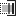
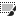

The command displays the “Selection Editor” dialog window. This dialog window displays the active selection in the current image and gives you easy access to the selection-related commands. It is not really intended for editing selections directly, but if you are working on a selection, it is handy to have the selection commands all together, since it is easier to click on a button than to search for commands in the command tree of the menubar. The “Selection Editor” also offers some advanced options for the “Select to Path” command.
- The Buttons
-
The “Selection Editor” dialog window has several buttons which you can use to easily access selection commands:
-
The Select All button.
-
The Select None button.
-
The Select Invert button.
-

The Save to Channel button. -
 The To Path
button. If you hold the Shift key while
clicking on this button, the
Advanced
Settings dialog is displayed. Please see the next section
for details about these options.
The To Path
button. If you hold the Shift key while
clicking on this button, the
Advanced
Settings dialog is displayed. Please see the next section
for details about these options.
-

The Stroke Selection button.
-
- The display window
-
In the display window, selected areas of the image are white, non-selected areas are black, and partially selected areas are in shades of gray. Clicking in this window acts like Select by Color. See the example below.
Figure 16.20. Example of clicking in the “Selection Editor” display window
Selection Editor window after clicking.
Image with the resulting selection applied.
The “Selection to Path Advanced Settings” dialog, that you get by Shift clicking on the button, contains a number of options, most of which you can set with a slider bar. There is also one check box. These options are mostly used by advanced users. They are:
- Align Threshold
-
If two endpoints are closer than this value, they are made to be equal.
- Corner Always Threshold
-
If the angle defined by a point and its predecessors and successors is smaller than this, it is a corner, even if it is within Corner Surround pixels of a point with a smaller angle.
- Corner Surround
-
Number of points to consider when determining if a point is a corner or not.
- Corner Threshold
-
If a point, its predecessors, and its successors define an angle smaller than this, it is a corner.
- Error Threshold
-
Amount of error at which a fitted spline[6] is unacceptable. If any pixel is further away than this from the fitted curve, the algorithm tries again.
- Filter Alternative Surround
-
A second number of adjacent points to consider when filtering.
- Filter Epsilon
-
If the angles between the vectors produced by Filter Surround and Filter Alternative Surround points differ by more than this, use the one from Filter Alternative Surround.
- Filter Iteration Count
-
The number of times to smooth the original data points. Increasing this number dramatically, to 50 or so, can produce vastly better results. But if any points that “should” be corners aren't found, the curve goes wild around that point.
- Filter Percent
-
To produce the new point, use the old point plus this times the neighbors.
- Filter Secondary Surround
-
Number of adjacent points to consider if Filter Surround points defines a straight line.
- Filter Surround
-
Number of adjacent points to consider when filtering.
- Keep Knees
-
This check box says whether or not to remove “knee” points after finding the outline.
- Line Reversion Threshold
-
If a spline is closer to a straight line than this value, it remains a straight line, even if it would otherwise be changed back to a curve. This is weighted by the square of the curve length, to make shorter curves more likely to be reverted.
- Line Threshold
-
How many pixels (on the average) a spline can diverge from the line determined by its endpoints before it is changed to a straight line.
- Reparametrize Improvement
-
If reparameterization doesn't improve the fit by this much percent, the algorithm stops doing it.
- Reparametrize Threshold
-
Amount of error at which it is pointless to reparameterize. This happens, for example, when the algorithm is trying to fit the outline of the outside of an “O” with a single spline. The initial fit is not good enough for the Newton-Raphson iteration to improve it. It may be that it would be better to detect the cases where the algorithm didn't find any corners.
- Subdivide Search
-
Percentage of the curve away from the worst point to look for a better place to subdivide.
- Subdivide Surround
-
Number of points to consider when deciding whether a given point is a better place to subdivide.
- Subdivide Threshold
-
How many pixels a point can diverge from a straight line and still be considered a better place to subdivide.
- Tangent Surround
-
Number of points to look at on either side of a point when computing the approximation to the tangent at that point.